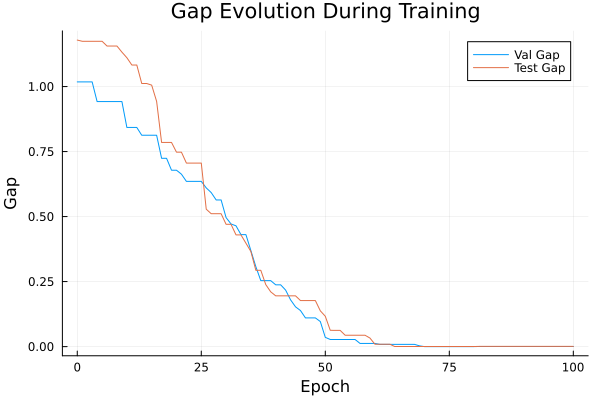
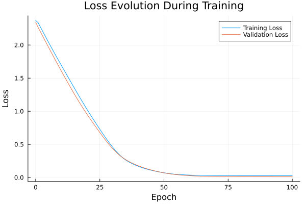

Basic Tutorial: Training with FYL on Argmax Benchmark
This tutorial demonstrates the basic workflow for training a policy using the Perturbed Fenchel-Young Loss algorithm.
Setup
using DecisionFocusedLearningAlgorithms
using DecisionFocusedLearningBenchmarks
using MLUtils: splitobs
using PlotsCreate Benchmark and Data
b = ArgmaxBenchmark()
dataset = generate_dataset(b, 100)
train_data, val_data, test_data = splitobs(dataset; at=(0.3, 0.3, 0.4))(DecisionFocusedLearningBenchmarks.Utils.DataSample{@NamedTuple{}, @NamedTuple{}, Matrix{Float32}, Vector{Float32}, Vector{Float32}}[DataSample(x=Float32[-0.441579 -1.28872 … -0.51553 1.08572; 0.928934 -0.50059 … 0.076705 0.776208; … ; 0.255508 -1.82363 … 0.0507225 -1.35234; -0.435009 1.36075 … -0.360221 -1.91271], θ=Float32[-1.72116, 0.112512, 0.983969, -0.724981, 0.0576151, -1.21533, 0.0583256, 0.165995, -1.07382, -1.714], y=Float32[0.0, 0.0, 1.0, 0.0, 0.0, 0.0, 0.0, 0.0, 0.0, 0.0]), DataSample(x=Float32[-0.960586 0.55375 … -0.466824 0.894573; -0.838463 1.25519 … -2.0326 0.814801; … ; -1.12873 1.03181 … -1.30155 0.127391; 0.231328 -0.141786 … -1.63837 0.086689], θ=Float32[1.05216, -0.869657, 1.83255, 2.86977, -2.09052, 0.0205667, 1.70321, 0.385293, -1.14772, 0.737605], y=Float32[0.0, 0.0, 0.0, 1.0, 0.0, 0.0, 0.0, 0.0, 0.0, 0.0]), DataSample(x=Float32[-0.177196 -1.74511 … -0.0497434 0.072363; -2.35382 0.30307 … -0.029825 -0.881558; … ; -0.282353 1.32363 … -1.39583 2.04575; -0.187823 0.493877 … -0.061918 -0.605397], θ=Float32[2.04675, -0.445564, -0.0873651, 0.7968, 0.531567, 0.263288, -2.7763, -0.909579, -0.467144, 0.186025], y=Float32[1.0, 0.0, 0.0, 0.0, 0.0, 0.0, 0.0, 0.0, 0.0, 0.0]), DataSample(x=Float32[-1.28857 -0.480566 … -0.898907 0.862732; -0.236995 0.525146 … 0.485409 2.09693; … ; -0.715179 -1.37931 … 1.5177 0.14356; -0.0684035 -0.279905 … 1.91571 -0.760343], θ=Float32[-0.433286, -0.93061, -1.14786, 0.177309, -0.851738, 1.85626, -0.347704, 0.23533, 2.07322, -0.495148], y=Float32[0.0, 0.0, 0.0, 0.0, 0.0, 0.0, 0.0, 0.0, 1.0, 0.0]), DataSample(x=Float32[0.106636 0.44966 … -0.636486 -0.0793518; -0.187306 -1.60608 … 0.960269 0.092322; … ; -1.31047 0.948187 … 2.1544 -0.806828; -0.216553 0.737685 … -0.138129 0.740424], θ=Float32[-0.878224, 1.14045, 0.430771, 0.687693, 0.490259, -3.07312, 0.14141, 0.571963, -1.16396, 0.334185], y=Float32[0.0, 1.0, 0.0, 0.0, 0.0, 0.0, 0.0, 0.0, 0.0, 0.0]), DataSample(x=Float32[-0.579716 1.54613 … -0.616987 -1.07765; -0.0449921 0.171976 … 1.2301 0.954281; … ; 1.86501 0.00571038 … -1.839 0.889185; 0.830586 -1.74424 … -0.980485 2.09555], θ=Float32[0.661777, -0.793599, 0.982432, 1.56278, -0.127202, -2.24832, 0.617323, -0.607612, -1.7837, 0.411943], y=Float32[0.0, 0.0, 0.0, 1.0, 0.0, 0.0, 0.0, 0.0, 0.0, 0.0]), DataSample(x=Float32[-1.19754 0.298643 … -3.2963 0.208026; 0.488022 0.242085 … 0.838773 0.758059; … ; -0.0989935 -1.20328 … 0.0741084 -0.137511; 0.292042 0.607815 … 0.526073 0.476715], θ=Float32[0.0597721, 0.791074, 1.0484, 1.17527, -0.70738, -0.397106, 1.3696, 0.310034, -1.61388, -0.410101], y=Float32[0.0, 0.0, 0.0, 0.0, 0.0, 0.0, 1.0, 0.0, 0.0, 0.0]), DataSample(x=Float32[0.782469 1.13632 … -0.144288 0.317026; -0.456216 -0.967591 … -0.14606 0.620167; … ; -2.12968 -0.380369 … 0.182909 1.03094; -0.980055 1.62818 … 0.134495 -1.22783], θ=Float32[-0.456282, 2.28262, 2.84863, -2.94868, -1.47665, -1.64718, 0.324225, -2.02784, -0.318197, -0.577857], y=Float32[0.0, 0.0, 1.0, 0.0, 0.0, 0.0, 0.0, 0.0, 0.0, 0.0]), DataSample(x=Float32[1.13734 -0.138003 … 1.10032 1.00048; 1.02531 0.481857 … 0.36957 0.983338; … ; 0.16883 0.385648 … -0.506781 -0.232925; -0.291958 -0.304595 … -0.300739 0.625769], θ=Float32[-0.601208, 0.0386954, -0.25097, -0.794096, 0.226205, -0.328727, -0.258225, -0.453874, 0.203696, 0.247776], y=Float32[0.0, 0.0, 0.0, 0.0, 0.0, 0.0, 0.0, 0.0, 0.0, 1.0]), DataSample(x=Float32[0.726845 1.84016 … 0.74228 -1.37209; -0.926128 -0.683249 … -1.45796 -1.25754; … ; -0.250607 -0.135455 … -0.429296 -2.02791; -1.1012 -1.76343 … 1.73351 0.27183], θ=Float32[-0.165358, -0.657802, -0.0609493, 2.10075, -0.748857, -0.77777, -0.562639, 1.13807, 2.35774, -0.120869], y=Float32[0.0, 0.0, 0.0, 0.0, 0.0, 0.0, 0.0, 0.0, 1.0, 0.0]) … DataSample(x=Float32[0.424455 1.38747 … 0.488714 0.495682; 1.37251 0.363176 … -0.591132 2.11328; … ; -0.330911 -0.175543 … -0.37164 -0.468578; 0.392338 1.36532 … -0.133008 -0.644773], θ=Float32[0.653558, 0.599541, -0.147206, -0.297331, 0.181333, 0.987508, -0.619412, 0.945289, 0.0688528, -1.87594], y=Float32[0.0, 0.0, 0.0, 0.0, 0.0, 1.0, 0.0, 0.0, 0.0, 0.0]), DataSample(x=Float32[-0.92399 -1.05605 … -3.03872 -1.00889; -0.880721 1.05122 … -2.55248 -0.815691; … ; 0.762113 -1.22899 … -0.472824 -2.31408; -0.637753 -0.0904546 … -0.350684 1.37311], θ=Float32[-0.882279, -1.32752, 0.268136, -1.27621, 0.556027, -1.32546, -0.390793, 0.015192, -0.0283597, 0.0182856], y=Float32[0.0, 0.0, 0.0, 0.0, 1.0, 0.0, 0.0, 0.0, 0.0, 0.0]), DataSample(x=Float32[1.75699 0.271454 … -0.423757 -0.790566; -1.49433 0.210626 … 0.139291 -0.985479; … ; -0.99794 0.871756 … -0.993912 -0.460611; -0.118546 0.784819 … -0.102539 1.1178], θ=Float32[1.32633, 0.819687, 0.527868, 0.393703, 0.0391989, 0.530998, -1.95502, 1.04752, -0.783869, 1.98844], y=Float32[0.0, 0.0, 0.0, 0.0, 0.0, 0.0, 0.0, 0.0, 0.0, 1.0]), DataSample(x=Float32[-0.25578 0.845696 … 1.5213 -1.18293; -0.151122 0.135332 … 1.93912 -0.871698; … ; -1.18013 0.160783 … -0.458331 -2.3202; -0.918645 -0.840833 … -0.533836 -0.0193888], θ=Float32[-1.43928, -0.455862, 0.86763, -0.728725, -1.8451, 0.553262, -0.303393, -0.39592, -1.32423, -0.245983], y=Float32[0.0, 0.0, 1.0, 0.0, 0.0, 0.0, 0.0, 0.0, 0.0, 0.0]), DataSample(x=Float32[0.430331 0.228318 … -0.250221 0.543957; -0.541249 1.45894 … 0.606727 -0.59023; … ; 0.116317 0.399747 … 0.944028 1.02306; 2.03487 2.6564 … -0.766131 -1.55077], θ=Float32[2.21563, 0.294645, 0.748385, -0.0846654, -0.661551, -2.4865, -0.538846, -1.92944, -1.14674, -0.2459], y=Float32[1.0, 0.0, 0.0, 0.0, 0.0, 0.0, 0.0, 0.0, 0.0, 0.0]), DataSample(x=Float32[-0.18216 -0.431935 … -0.863823 -0.615561; -0.677303 -1.18584 … 0.709859 -1.02241; … ; 0.994031 -0.555383 … -0.941599 0.881838; -0.191795 -0.439373 … -1.027 -2.0476], θ=Float32[0.00481462, -0.196603, -1.30794, 1.84294, -0.711872, -0.620355, 2.87419, -0.815302, -1.97529, -1.41343], y=Float32[0.0, 0.0, 0.0, 0.0, 0.0, 0.0, 1.0, 0.0, 0.0, 0.0]), DataSample(x=Float32[0.235587 -0.506127 … 0.7503 0.655003; -0.46638 -0.0351144 … 0.334905 1.36421; … ; 1.35453 -0.177952 … -0.224207 -0.248306; 0.650928 0.243484 … -0.534424 -2.07253], θ=Float32[1.80554, -0.511576, -0.162178, -1.65304, 1.00699, 0.302188, -0.140628, 1.20394, -0.227895, -1.82209], y=Float32[1.0, 0.0, 0.0, 0.0, 0.0, 0.0, 0.0, 0.0, 0.0, 0.0]), DataSample(x=Float32[-0.719932 0.669459 … 2.08191 0.176138; 1.02162 -0.758195 … -0.632854 0.0612533; … ; 0.568256 -0.00621834 … -0.597594 0.989237; -0.971691 -0.0783492 … -0.810623 0.0461613], θ=Float32[-1.26264, 0.604794, -0.484532, 0.81709, 1.18988, 0.56237, -0.58406, -0.644855, -0.0566172, 0.0731322], y=Float32[0.0, 0.0, 0.0, 0.0, 1.0, 0.0, 0.0, 0.0, 0.0, 0.0]), DataSample(x=Float32[1.241 -0.486368 … -0.331297 -1.20028; -1.85058 -0.149336 … 1.14788 0.121669; … ; 0.282957 -0.661077 … 0.475898 -1.48269; -0.0011454 -1.86303 … 1.24404 0.600898], θ=Float32[1.94251, -2.00675, 1.13745, 0.896266, 0.355121, -0.986745, 0.125863, 0.984683, 0.533177, -0.658548], y=Float32[1.0, 0.0, 0.0, 0.0, 0.0, 0.0, 0.0, 0.0, 0.0, 0.0]), DataSample(x=Float32[1.55468 -0.642645 … -0.707456 -0.0517775; -1.61365 -1.42682 … 0.208789 -0.905068; … ; -1.58643 -0.899882 … 0.0543452 -0.932703; -0.468361 -0.459947 … -1.43096 -1.54383], θ=Float32[0.683951, -0.218673, 1.19365, -0.428633, -0.190019, 0.230417, -0.0174069, -0.378111, -1.74038, -0.574285], y=Float32[0.0, 0.0, 1.0, 0.0, 0.0, 0.0, 0.0, 0.0, 0.0, 0.0])], DecisionFocusedLearningBenchmarks.Utils.DataSample{@NamedTuple{}, @NamedTuple{}, Matrix{Float32}, Vector{Float32}, Vector{Float32}}[DataSample(x=Float32[2.06899 0.356663 … 1.14006 0.694676; -0.759032 0.0999964 … 2.67623 -0.23925; … ; 1.20798 1.35246 … 0.548737 0.826475; 0.609399 -0.0346171 … -1.03769 0.251517], θ=Float32[2.43787, 0.343305, -0.153983, -1.02342, -1.10157, -0.914779, -0.561737, 1.47899, -1.76126, 0.00924056], y=Float32[1.0, 0.0, 0.0, 0.0, 0.0, 0.0, 0.0, 0.0, 0.0, 0.0]), DataSample(x=Float32[0.221042 0.370345 … -1.26384 0.604565; -1.44792 -0.505157 … 1.79139 1.58361; … ; 0.405566 -1.34071 … 0.508589 -0.552245; -1.60816 -0.493315 … -0.188183 -0.547112], θ=Float32[-0.411957, -0.124935, -0.217401, -0.315617, -1.10976, -0.111564, 0.163205, 0.849311, -1.17737, -0.858502], y=Float32[0.0, 0.0, 0.0, 0.0, 0.0, 0.0, 0.0, 1.0, 0.0, 0.0]), DataSample(x=Float32[0.146202 -1.16636 … 1.2986 -1.28665; -0.529618 1.40298 … 0.601138 1.44725; … ; -0.737903 -0.70265 … -0.523232 -0.571424; 0.517641 -1.8023 … 0.794891 0.525976], θ=Float32[-0.389159, -2.51638, 0.814149, 0.38968, 0.806465, 0.254095, 1.66492, 0.122226, 0.254635, -0.891481], y=Float32[0.0, 0.0, 0.0, 0.0, 0.0, 0.0, 1.0, 0.0, 0.0, 0.0]), DataSample(x=Float32[0.434468 -0.678359 … 1.10931 -0.862983; -0.259788 -0.324196 … -0.717866 0.560332; … ; 0.125691 -0.425181 … 1.14412 0.586804; -0.224765 1.77594 … 1.23574 -0.0248676], θ=Float32[-0.0502955, 1.53604, 0.209278, -1.36802, -0.603027, 1.24099, -0.782142, 1.06853, 2.05684, -0.471487], y=Float32[0.0, 0.0, 0.0, 0.0, 0.0, 0.0, 0.0, 0.0, 1.0, 0.0]), DataSample(x=Float32[1.03559 0.861714 … -0.394504 2.10054; 1.21437 1.06598 … -1.44619 -0.478512; … ; 1.1602 0.487845 … -0.273458 -0.897567; -0.274401 0.235581 … 1.07664 0.531891], θ=Float32[-0.862323, -0.136062, 1.18815, 1.5957, 0.880717, -1.52173, -1.45452, 0.187153, 0.479512, 1.17324], y=Float32[0.0, 0.0, 0.0, 1.0, 0.0, 0.0, 0.0, 0.0, 0.0, 0.0]), DataSample(x=Float32[1.00549 0.233246 … -0.100144 0.293844; -1.36613 1.59224 … -0.488899 1.68883; … ; -0.908064 -0.519119 … -0.497024 -0.981379; 0.66467 1.27089 … 0.477102 1.83479], θ=Float32[1.60914, 0.455863, 0.0172282, -2.04119, 0.456692, 0.129361, -0.983941, 2.41171, 0.989608, 0.503164], y=Float32[0.0, 0.0, 0.0, 0.0, 0.0, 0.0, 0.0, 1.0, 0.0, 0.0]), DataSample(x=Float32[0.0798197 0.831178 … -0.0844794 -0.705357; 0.81211 1.30185 … 0.157409 0.908243; … ; -1.01045 1.09966 … 0.526585 -0.565271; 1.69119 1.72235 … 1.10365 -0.567091], θ=Float32[0.612156, 1.34132, 1.22789, 1.07457, 0.263167, 1.03166, -0.41516, 0.637315, 1.01282, -1.01752], y=Float32[0.0, 1.0, 0.0, 0.0, 0.0, 0.0, 0.0, 0.0, 0.0, 0.0]), DataSample(x=Float32[-1.1825 0.379852 … 2.81979 -1.31748; 0.629826 0.373397 … 0.103766 -1.88154; … ; 0.260435 -1.31352 … 0.557313 1.77054; -0.975332 -0.206393 … 0.0693374 -0.973973], θ=Float32[-1.3827, -1.14577, 0.871345, -0.0640243, -0.370233, -2.12366, 0.291178, 1.93808, 0.764834, -0.539277], y=Float32[0.0, 0.0, 0.0, 0.0, 0.0, 0.0, 0.0, 1.0, 0.0, 0.0]), DataSample(x=Float32[0.572224 0.0654852 … -1.02114 0.239576; -0.93767 0.746992 … -0.104666 -2.44692; … ; -0.19542 0.139645 … 0.157866 -0.900722; -0.706586 -0.842339 … -0.117769 0.69341], θ=Float32[0.72085, -1.68896, 0.227298, 1.15431, -0.608339, 2.73227, 0.0121368, -0.134171, -0.94391, 0.97407], y=Float32[0.0, 0.0, 0.0, 0.0, 0.0, 1.0, 0.0, 0.0, 0.0, 0.0]), DataSample(x=Float32[-0.868171 0.986163 … -0.942495 0.667601; -0.46663 -0.5351 … -0.757388 0.0367467; … ; 0.588677 -0.0290404 … -0.729443 0.10444; 1.22703 -0.240147 … -0.163972 -0.626048], θ=Float32[1.41918, 0.436526, -2.36815, -0.794916, -1.47132, -1.0901, -0.114856, -1.17152, -0.657755, 0.385121], y=Float32[1.0, 0.0, 0.0, 0.0, 0.0, 0.0, 0.0, 0.0, 0.0, 0.0]) … DataSample(x=Float32[-1.30794 -0.234157 … 0.539245 -0.501079; -0.632145 -1.15337 … -2.40228 -0.619531; … ; 1.06232 0.15009 … -0.520291 0.324378; 0.0401222 -0.586058 … -0.985879 -0.655196], θ=Float32[-0.278574, 0.60915, -1.96254, 0.817066, -0.158921, 1.45153, -0.173842, -1.21367, 0.209594, -0.717573], y=Float32[0.0, 0.0, 0.0, 0.0, 0.0, 1.0, 0.0, 0.0, 0.0, 0.0]), DataSample(x=Float32[-1.54832 -0.144943 … 0.277277 -0.271967; -1.70846 -1.19515 … -2.7309 -0.80049; … ; -0.313896 0.0168244 … 1.07472 0.29191; 1.01353 0.331715 … -1.45509 -0.0768657], θ=Float32[0.738902, -0.0879096, -1.32896, 1.96569, -1.79626, -1.53243, -0.678368, -0.341829, -0.338569, 0.259516], y=Float32[0.0, 0.0, 0.0, 1.0, 0.0, 0.0, 0.0, 0.0, 0.0, 0.0]), DataSample(x=Float32[0.790089 0.622496 … -0.281726 -0.0654601; 0.650714 1.45797 … 1.33142 -0.143437; … ; 0.81249 1.07437 … 0.927402 0.471835; -0.346334 0.158156 … -0.828424 -0.851014], θ=Float32[0.229168, -0.321309, -0.0726913, -0.364842, -0.339419, -0.571692, -2.15653, 0.543426, -0.669002, 0.296377], y=Float32[0.0, 0.0, 0.0, 0.0, 0.0, 0.0, 0.0, 1.0, 0.0, 0.0]), DataSample(x=Float32[0.259574 -0.886318 … 0.265107 -1.08069; -0.585444 -0.573179 … -1.47982 -0.455984; … ; 0.183662 -0.968007 … 0.237293 -1.55229; -0.153254 -0.566496 … -0.0131051 0.15535], θ=Float32[0.547693, -1.01009, 1.1895, 0.456703, -0.739498, -0.915695, -0.505503, -0.565527, 0.900755, 0.390195], y=Float32[0.0, 0.0, 1.0, 0.0, 0.0, 0.0, 0.0, 0.0, 0.0, 0.0]), DataSample(x=Float32[1.18231 0.140215 … -1.87708 -0.278976; 0.223332 0.819174 … -1.82668 0.522153; … ; -1.41295 -1.19837 … -1.30262 -0.880446; 0.203758 -0.0326674 … 1.06086 -2.01351], θ=Float32[0.250297, -0.241745, -0.0926595, 0.298331, -1.4536, 0.907519, -0.368806, -1.11953, 0.0824134, -2.54336], y=Float32[0.0, 0.0, 0.0, 0.0, 0.0, 1.0, 0.0, 0.0, 0.0, 0.0]), DataSample(x=Float32[-1.37349 -0.696255 … 0.65771 1.05243; 1.20699 -0.859514 … -1.54229 -0.693622; … ; -0.348393 2.28621 … -0.0217465 0.605835; 0.340235 0.36393 … -1.13028 -1.15691], θ=Float32[0.0397083, 0.0119075, 1.43503, 1.40608, -1.53448, 0.737786, 1.36187, 1.45224, -0.433727, -0.20602], y=Float32[0.0, 0.0, 0.0, 0.0, 0.0, 0.0, 0.0, 1.0, 0.0, 0.0]), DataSample(x=Float32[-0.494382 0.848527 … -0.733606 1.31318; -1.01392 0.0148463 … -0.56247 0.605243; … ; 1.45431 -0.138594 … -0.922963 -0.765268; -0.992887 0.248141 … 1.52495 0.508198], θ=Float32[-0.360047, 1.02615, -0.45957, 0.491668, 0.0123098, -0.28255, 1.14826, -0.209988, 1.49145, 1.17489], y=Float32[0.0, 0.0, 0.0, 0.0, 0.0, 0.0, 0.0, 0.0, 1.0, 0.0]), DataSample(x=Float32[-0.348471 -0.526029 … 0.737132 0.390432; 0.0460037 1.31734 … -0.15764 -0.726094; … ; 0.993254 -0.0743982 … -0.523847 0.938657; 0.526377 1.20626 … 0.0956946 0.978405], θ=Float32[0.558625, -0.251268, -0.0819442, -1.19877, 0.0591465, -0.983806, 0.644287, 0.598471, 0.142353, 1.67516], y=Float32[0.0, 0.0, 0.0, 0.0, 0.0, 0.0, 0.0, 0.0, 0.0, 1.0]), DataSample(x=Float32[-2.49383 -0.0535498 … -0.412965 -0.242315; 0.418677 0.959514 … 1.72582 1.67703; … ; -1.2304 -0.0909505 … -1.53748 -0.482498; -1.84444 -0.00849405 … 0.253225 -0.304693], θ=Float32[-2.84413, -0.586037, 0.604198, 1.39853, 1.8556, 0.517091, -1.5722, 1.11109, -1.34234, -1.24015], y=Float32[0.0, 0.0, 0.0, 0.0, 1.0, 0.0, 0.0, 0.0, 0.0, 0.0]), DataSample(x=Float32[-0.281459 -0.150126 … 1.05373 -0.156447; -0.966853 -0.673192 … -0.19414 -0.703526; … ; -0.0265062 0.393496 … -0.23199 2.51847; -1.56181 0.595814 … 0.959803 -2.00451], θ=Float32[-1.72701, 1.02216, -0.877259, 1.00333, 2.545, -0.489954, 0.0355565, -1.88717, 0.755692, -0.948844], y=Float32[0.0, 0.0, 0.0, 0.0, 1.0, 0.0, 0.0, 0.0, 0.0, 0.0])], DecisionFocusedLearningBenchmarks.Utils.DataSample{@NamedTuple{}, @NamedTuple{}, Matrix{Float32}, Vector{Float32}, Vector{Float32}}[DataSample(x=Float32[-1.24336 -2.66968 … -0.348892 -0.0905797; 0.562244 0.271603 … 1.22396 -0.54942; … ; -1.11886 -0.726843 … 0.0506159 0.616238; -2.11459 0.27313 … -0.750399 -0.806105], θ=Float32[-2.75002, -0.401937, -0.378695, 0.643267, 1.08111, 0.754025, 1.88156, 1.21501, -1.11156, -0.167182], y=Float32[0.0, 0.0, 0.0, 0.0, 0.0, 0.0, 1.0, 0.0, 0.0, 0.0]), DataSample(x=Float32[1.71086 1.17329 … -0.591408 3.27242; 0.00631463 0.964999 … 1.59045 -1.83949; … ; 1.34203 2.10599 … -0.994211 -2.37021; -1.12885 0.846793 … 1.80291 0.511301], θ=Float32[0.0171798, 1.22243, 0.44242, -0.115208, -1.0286, 0.401831, 0.360813, -1.52531, -0.274783, 3.07363], y=Float32[0.0, 0.0, 0.0, 0.0, 0.0, 0.0, 0.0, 0.0, 0.0, 1.0]), DataSample(x=Float32[-0.613869 0.248109 … -0.495494 -0.357492; 0.0768982 1.11925 … -0.438501 -1.65977; … ; 1.30816 -0.955389 … -0.689786 0.0966561; -1.21149 0.768639 … -0.560362 0.505237], θ=Float32[-1.68178, 0.0167239, -0.953026, 1.44461, -1.66545, 0.143841, 1.52824, 0.330382, -0.289447, -0.0383385], y=Float32[0.0, 0.0, 0.0, 0.0, 0.0, 0.0, 1.0, 0.0, 0.0, 0.0]), DataSample(x=Float32[-0.601939 -0.663505 … -1.10037 -0.515843; -0.480026 -1.7611 … -2.61848 0.637797; … ; -0.569168 -2.05442 … -0.991347 -1.15794; 1.21753 -0.590441 … 1.46964 -0.951406], θ=Float32[1.65005, 0.102386, -0.141036, -0.845266, 0.560238, 1.89433, -1.36063, -0.936412, 1.5064, -1.28868], y=Float32[0.0, 0.0, 0.0, 0.0, 0.0, 1.0, 0.0, 0.0, 0.0, 0.0]), DataSample(x=Float32[-1.81277 0.525987 … -0.948393 0.966702; 1.17395 -1.21847 … -0.527579 2.10984; … ; 0.435493 1.18594 … 0.53745 -0.438216; -0.385548 0.544585 … -0.0516897 -0.185402], θ=Float32[-1.32428, 2.02646, 0.329454, 1.33132, 0.452731, 2.50312, -1.13018, 0.256713, -0.0606172, -0.368293], y=Float32[0.0, 0.0, 0.0, 0.0, 0.0, 1.0, 0.0, 0.0, 0.0, 0.0]), DataSample(x=Float32[0.742917 -0.519348 … 0.08983 -0.631035; -0.301674 1.54569 … -0.045686 0.405767; … ; -0.354058 -0.0817897 … 1.14038 -1.10436; -0.123735 -0.628022 … 0.943281 -0.0718532], θ=Float32[0.150711, -2.19348, -0.517131, -1.44817, 0.442202, -0.343687, -1.08038, 0.0763678, 0.689207, -0.0361432], y=Float32[0.0, 0.0, 0.0, 0.0, 0.0, 0.0, 0.0, 0.0, 1.0, 0.0]), DataSample(x=Float32[0.373292 0.516446 … 0.874192 1.9023; -0.605534 1.31655 … 0.231973 -0.630149; … ; -1.95728 0.130998 … 0.526322 0.16618; -1.47547 -1.72848 … -0.0790391 0.893273], θ=Float32[-0.209843, -2.8775, 0.891188, -1.04654, 0.610692, 0.404525, 0.0328508, 0.0215951, 0.359585, 1.386], y=Float32[0.0, 0.0, 0.0, 0.0, 0.0, 0.0, 0.0, 0.0, 0.0, 1.0]), DataSample(x=Float32[-0.803844 0.182287 … -3.45242 0.450881; -0.218091 -0.276288 … 1.52693 -1.04438; … ; 1.35718 0.291287 … -1.03516 0.583998; 0.906747 0.983996 … 0.2814 1.90827], θ=Float32[0.402116, -0.376184, -0.458339, 0.0793559, -0.984534, -0.463823, 0.423809, -0.43463, -1.95721, 2.80886], y=Float32[0.0, 0.0, 0.0, 0.0, 0.0, 0.0, 0.0, 0.0, 0.0, 1.0]), DataSample(x=Float32[1.66308 0.138107 … 0.154472 -0.425427; -1.89 -1.09148 … 0.279478 -0.440693; … ; 1.56149 0.0606989 … 0.0629524 -0.158474; 1.89582 1.25158 … 0.926877 1.22118], θ=Float32[3.96527, 1.16643, -1.19939, -0.164134, -0.440479, -0.854588, -0.564687, 0.41655, 1.1197, 1.06966], y=Float32[1.0, 0.0, 0.0, 0.0, 0.0, 0.0, 0.0, 0.0, 0.0, 0.0]), DataSample(x=Float32[1.83051 -0.821977 … 0.38466 -1.17359; -0.633411 -1.15586 … -0.928199 0.288808; … ; 0.584236 0.987826 … -0.466241 0.174896; -0.167539 0.435779 … -1.57766 0.771149], θ=Float32[0.209902, 0.465196, 1.14718, -0.434239, -0.586171, -1.88894, -0.175939, -1.9864, -0.12685, 0.252734], y=Float32[0.0, 0.0, 1.0, 0.0, 0.0, 0.0, 0.0, 0.0, 0.0, 0.0]) … DataSample(x=Float32[0.797159 -0.367562 … 0.120179 0.0350908; 0.867713 -0.291299 … -1.14748 0.652837; … ; 0.362583 -1.91941 … -2.01058 0.871318; -1.24906 -1.74597 … 0.669503 -0.807665], θ=Float32[-2.70135, -1.58841, -1.18581, 0.484781, 0.394364, -0.42479, -1.15653, -0.75814, 1.01928, -0.173069], y=Float32[0.0, 0.0, 0.0, 0.0, 0.0, 0.0, 0.0, 0.0, 1.0, 0.0]), DataSample(x=Float32[-0.802457 1.56815 … -0.980756 1.71752; -0.144732 -1.88259 … -0.443797 -0.159081; … ; 0.561589 -0.781419 … 2.65571 -1.45802; 0.144416 0.229156 … 0.270051 -0.176458], θ=Float32[-0.619965, 1.81652, -0.369888, -2.47952, 1.60371, -0.0700812, -0.805764, -1.01537, 0.841011, 0.482271], y=Float32[0.0, 1.0, 0.0, 0.0, 0.0, 0.0, 0.0, 0.0, 0.0, 0.0]), DataSample(x=Float32[0.0211271 0.532724 … -0.605859 0.0519992; 1.36981 -0.123971 … 0.0125934 1.88339; … ; -1.31319 1.6088 … -1.01211 -0.709465; -0.735923 1.21549 … 0.142643 1.25684], θ=Float32[-2.36296, 1.08853, -1.21642, -0.141526, 1.06917, 0.140583, -2.64953, 0.634533, -0.00160443, 0.290484], y=Float32[0.0, 1.0, 0.0, 0.0, 0.0, 0.0, 0.0, 0.0, 0.0, 0.0]), DataSample(x=Float32[0.905629 0.0987497 … 0.532535 -1.55659; -2.2764 -1.00433 … -1.25318 1.4837; … ; 0.704753 -0.245141 … -0.15595 0.870571; -0.388352 0.644318 … 0.160663 0.0464146], θ=Float32[0.516274, 0.995292, 1.17006, -0.862731, -1.4601, 1.57882, -0.281206, 1.01632, 1.20041, -1.45996], y=Float32[0.0, 0.0, 0.0, 0.0, 0.0, 1.0, 0.0, 0.0, 0.0, 0.0]), DataSample(x=Float32[-0.225992 0.0609017 … -0.323288 -0.361235; 0.896558 -2.69779 … 0.320931 0.846631; … ; -0.879006 0.451472 … -1.78471 -1.08966; -1.50484 0.76884 … 1.0062 -0.0136445], θ=Float32[-1.52025, 2.52288, -0.684705, 0.850936, -1.52163, 0.722109, -1.69534, 0.854352, 0.649176, -0.823936], y=Float32[0.0, 1.0, 0.0, 0.0, 0.0, 0.0, 0.0, 0.0, 0.0, 0.0]), DataSample(x=Float32[-0.996641 -1.60081 … 2.55525 -0.350365; -0.513268 0.426986 … 1.15488 -0.430964; … ; -1.40519 0.563898 … 0.713965 -0.229013; -0.784113 -1.20426 … -0.20722 -0.273711], θ=Float32[-1.37637, -0.766262, 0.812938, -0.345568, 0.88315, 1.28363, -0.124873, -0.105087, 0.353936, -0.5112], y=Float32[0.0, 0.0, 0.0, 0.0, 0.0, 1.0, 0.0, 0.0, 0.0, 0.0]), DataSample(x=Float32[-2.32542 0.487042 … 0.198436 -0.32324; 0.0432207 0.490911 … 0.257957 -2.43701; … ; 0.262231 0.453424 … -0.317017 1.21278; 0.102288 -0.818683 … -1.91879 -0.508224], θ=Float32[-1.04783, -0.192389, -1.98316, 1.76962, 0.172254, 1.46041, 1.09569, 0.820387, -0.99276, 0.924136], y=Float32[0.0, 0.0, 0.0, 1.0, 0.0, 0.0, 0.0, 0.0, 0.0, 0.0]), DataSample(x=Float32[-0.163355 -0.989399 … 0.693269 -0.681133; 0.840854 1.18555 … 0.631541 -0.128678; … ; 0.714263 0.922672 … -0.346901 0.184468; -1.74705 1.10411 … 0.121677 0.570656], θ=Float32[-1.81418, -0.0409062, 0.289137, -0.493382, -0.0583581, 0.242702, 0.786256, -0.877915, 0.63673, 0.346226], y=Float32[0.0, 0.0, 0.0, 0.0, 0.0, 0.0, 1.0, 0.0, 0.0, 0.0]), DataSample(x=Float32[1.39196 -0.864794 … 0.16832 -0.808746; -0.151815 1.42468 … -0.560994 1.26446; … ; 0.154712 0.101837 … 0.191658 1.46623; -1.36313 1.84902 … -0.13323 0.740532], θ=Float32[-0.346554, 0.458759, -2.17784, 0.0446441, -0.609958, 2.49465, 0.150891, 0.714705, 0.339479, -0.22454], y=Float32[0.0, 0.0, 0.0, 0.0, 0.0, 1.0, 0.0, 0.0, 0.0, 0.0]), DataSample(x=Float32[-1.32382 -0.16425 … -0.449493 0.716692; 1.26446 0.659876 … 0.834267 -2.3403; … ; 0.778221 -0.550487 … -0.75702 -0.0520041; 0.830655 -0.552969 … 0.111703 -1.148], θ=Float32[-0.384513, -0.385855, 0.137939, 0.817421, -2.19977, -0.612107, -1.17407, -1.08547, -0.024159, -0.266126], y=Float32[0.0, 0.0, 0.0, 1.0, 0.0, 0.0, 0.0, 0.0, 0.0, 0.0])], DecisionFocusedLearningBenchmarks.Utils.DataSample{@NamedTuple{}, @NamedTuple{}, Matrix{Float32}, Vector{Float32}, Vector{Float32}}[])Create Policy
model = generate_statistical_model(b; seed=0)
maximizer = generate_maximizer(b)
policy = DFLPolicy(model, maximizer)DFLPolicy{Flux.Chain{Tuple{Flux.Dense{typeof(identity), Matrix{Float32}, Bool}, typeof(vec)}}, typeof(DecisionFocusedLearningBenchmarks.Argmax.one_hot_argmax)}(Chain(Dense(5 => 1; bias=false), vec), DecisionFocusedLearningBenchmarks.Argmax.one_hot_argmax)Configure Algorithm
algorithm = PerturbedFenchelYoungLossImitation(;
nb_samples=10, ε=0.1, threaded=true, seed=0
)PerturbedFenchelYoungLossImitation{Optimisers.Adam{Float64, Tuple{Float64, Float64}, Float64}, Int64}(10, 0.1, true, Optimisers.Adam(eta=0.001, beta=(0.9, 0.999), epsilon=1.0e-8), 0, false)Define Metrics to track during training
validation_loss_metric = FYLLossMetric(val_data, :validation_loss)
val_gap_metric = FunctionMetric(:val_gap, val_data) do ctx, data
return compute_gap(b, data, ctx.policy.statistical_model, ctx.policy.maximizer)
end
test_gap_metric = FunctionMetric(:test_gap, test_data) do ctx, data
return compute_gap(b, data, ctx.policy.statistical_model, ctx.policy.maximizer)
end
metrics = (validation_loss_metric, val_gap_metric, test_gap_metric)(FYLLossMetric{SubArray{DecisionFocusedLearningBenchmarks.Utils.DataSample{@NamedTuple{}, @NamedTuple{}, Matrix{Float32}, Vector{Float32}, Vector{Float32}}, 1, Vector{DecisionFocusedLearningBenchmarks.Utils.DataSample{@NamedTuple{}, @NamedTuple{}, Matrix{Float32}, Vector{Float32}, Vector{Float32}}}, Tuple{UnitRange{Int64}}, true}}(DecisionFocusedLearningBenchmarks.Utils.DataSample{@NamedTuple{}, @NamedTuple{}, Matrix{Float32}, Vector{Float32}, Vector{Float32}}[DataSample(x=Float32[2.06899 0.356663 … 1.14006 0.694676; -0.759032 0.0999964 … 2.67623 -0.23925; … ; 1.20798 1.35246 … 0.548737 0.826475; 0.609399 -0.0346171 … -1.03769 0.251517], θ=Float32[2.43787, 0.343305, -0.153983, -1.02342, -1.10157, -0.914779, -0.561737, 1.47899, -1.76126, 0.00924056], y=Float32[1.0, 0.0, 0.0, 0.0, 0.0, 0.0, 0.0, 0.0, 0.0, 0.0]), DataSample(x=Float32[0.221042 0.370345 … -1.26384 0.604565; -1.44792 -0.505157 … 1.79139 1.58361; … ; 0.405566 -1.34071 … 0.508589 -0.552245; -1.60816 -0.493315 … -0.188183 -0.547112], θ=Float32[-0.411957, -0.124935, -0.217401, -0.315617, -1.10976, -0.111564, 0.163205, 0.849311, -1.17737, -0.858502], y=Float32[0.0, 0.0, 0.0, 0.0, 0.0, 0.0, 0.0, 1.0, 0.0, 0.0]), DataSample(x=Float32[0.146202 -1.16636 … 1.2986 -1.28665; -0.529618 1.40298 … 0.601138 1.44725; … ; -0.737903 -0.70265 … -0.523232 -0.571424; 0.517641 -1.8023 … 0.794891 0.525976], θ=Float32[-0.389159, -2.51638, 0.814149, 0.38968, 0.806465, 0.254095, 1.66492, 0.122226, 0.254635, -0.891481], y=Float32[0.0, 0.0, 0.0, 0.0, 0.0, 0.0, 1.0, 0.0, 0.0, 0.0]), DataSample(x=Float32[0.434468 -0.678359 … 1.10931 -0.862983; -0.259788 -0.324196 … -0.717866 0.560332; … ; 0.125691 -0.425181 … 1.14412 0.586804; -0.224765 1.77594 … 1.23574 -0.0248676], θ=Float32[-0.0502955, 1.53604, 0.209278, -1.36802, -0.603027, 1.24099, -0.782142, 1.06853, 2.05684, -0.471487], y=Float32[0.0, 0.0, 0.0, 0.0, 0.0, 0.0, 0.0, 0.0, 1.0, 0.0]), DataSample(x=Float32[1.03559 0.861714 … -0.394504 2.10054; 1.21437 1.06598 … -1.44619 -0.478512; … ; 1.1602 0.487845 … -0.273458 -0.897567; -0.274401 0.235581 … 1.07664 0.531891], θ=Float32[-0.862323, -0.136062, 1.18815, 1.5957, 0.880717, -1.52173, -1.45452, 0.187153, 0.479512, 1.17324], y=Float32[0.0, 0.0, 0.0, 1.0, 0.0, 0.0, 0.0, 0.0, 0.0, 0.0]), DataSample(x=Float32[1.00549 0.233246 … -0.100144 0.293844; -1.36613 1.59224 … -0.488899 1.68883; … ; -0.908064 -0.519119 … -0.497024 -0.981379; 0.66467 1.27089 … 0.477102 1.83479], θ=Float32[1.60914, 0.455863, 0.0172282, -2.04119, 0.456692, 0.129361, -0.983941, 2.41171, 0.989608, 0.503164], y=Float32[0.0, 0.0, 0.0, 0.0, 0.0, 0.0, 0.0, 1.0, 0.0, 0.0]), DataSample(x=Float32[0.0798197 0.831178 … -0.0844794 -0.705357; 0.81211 1.30185 … 0.157409 0.908243; … ; -1.01045 1.09966 … 0.526585 -0.565271; 1.69119 1.72235 … 1.10365 -0.567091], θ=Float32[0.612156, 1.34132, 1.22789, 1.07457, 0.263167, 1.03166, -0.41516, 0.637315, 1.01282, -1.01752], y=Float32[0.0, 1.0, 0.0, 0.0, 0.0, 0.0, 0.0, 0.0, 0.0, 0.0]), DataSample(x=Float32[-1.1825 0.379852 … 2.81979 -1.31748; 0.629826 0.373397 … 0.103766 -1.88154; … ; 0.260435 -1.31352 … 0.557313 1.77054; -0.975332 -0.206393 … 0.0693374 -0.973973], θ=Float32[-1.3827, -1.14577, 0.871345, -0.0640243, -0.370233, -2.12366, 0.291178, 1.93808, 0.764834, -0.539277], y=Float32[0.0, 0.0, 0.0, 0.0, 0.0, 0.0, 0.0, 1.0, 0.0, 0.0]), DataSample(x=Float32[0.572224 0.0654852 … -1.02114 0.239576; -0.93767 0.746992 … -0.104666 -2.44692; … ; -0.19542 0.139645 … 0.157866 -0.900722; -0.706586 -0.842339 … -0.117769 0.69341], θ=Float32[0.72085, -1.68896, 0.227298, 1.15431, -0.608339, 2.73227, 0.0121368, -0.134171, -0.94391, 0.97407], y=Float32[0.0, 0.0, 0.0, 0.0, 0.0, 1.0, 0.0, 0.0, 0.0, 0.0]), DataSample(x=Float32[-0.868171 0.986163 … -0.942495 0.667601; -0.46663 -0.5351 … -0.757388 0.0367467; … ; 0.588677 -0.0290404 … -0.729443 0.10444; 1.22703 -0.240147 … -0.163972 -0.626048], θ=Float32[1.41918, 0.436526, -2.36815, -0.794916, -1.47132, -1.0901, -0.114856, -1.17152, -0.657755, 0.385121], y=Float32[1.0, 0.0, 0.0, 0.0, 0.0, 0.0, 0.0, 0.0, 0.0, 0.0]) … DataSample(x=Float32[-1.30794 -0.234157 … 0.539245 -0.501079; -0.632145 -1.15337 … -2.40228 -0.619531; … ; 1.06232 0.15009 … -0.520291 0.324378; 0.0401222 -0.586058 … -0.985879 -0.655196], θ=Float32[-0.278574, 0.60915, -1.96254, 0.817066, -0.158921, 1.45153, -0.173842, -1.21367, 0.209594, -0.717573], y=Float32[0.0, 0.0, 0.0, 0.0, 0.0, 1.0, 0.0, 0.0, 0.0, 0.0]), DataSample(x=Float32[-1.54832 -0.144943 … 0.277277 -0.271967; -1.70846 -1.19515 … -2.7309 -0.80049; … ; -0.313896 0.0168244 … 1.07472 0.29191; 1.01353 0.331715 … -1.45509 -0.0768657], θ=Float32[0.738902, -0.0879096, -1.32896, 1.96569, -1.79626, -1.53243, -0.678368, -0.341829, -0.338569, 0.259516], y=Float32[0.0, 0.0, 0.0, 1.0, 0.0, 0.0, 0.0, 0.0, 0.0, 0.0]), DataSample(x=Float32[0.790089 0.622496 … -0.281726 -0.0654601; 0.650714 1.45797 … 1.33142 -0.143437; … ; 0.81249 1.07437 … 0.927402 0.471835; -0.346334 0.158156 … -0.828424 -0.851014], θ=Float32[0.229168, -0.321309, -0.0726913, -0.364842, -0.339419, -0.571692, -2.15653, 0.543426, -0.669002, 0.296377], y=Float32[0.0, 0.0, 0.0, 0.0, 0.0, 0.0, 0.0, 1.0, 0.0, 0.0]), DataSample(x=Float32[0.259574 -0.886318 … 0.265107 -1.08069; -0.585444 -0.573179 … -1.47982 -0.455984; … ; 0.183662 -0.968007 … 0.237293 -1.55229; -0.153254 -0.566496 … -0.0131051 0.15535], θ=Float32[0.547693, -1.01009, 1.1895, 0.456703, -0.739498, -0.915695, -0.505503, -0.565527, 0.900755, 0.390195], y=Float32[0.0, 0.0, 1.0, 0.0, 0.0, 0.0, 0.0, 0.0, 0.0, 0.0]), DataSample(x=Float32[1.18231 0.140215 … -1.87708 -0.278976; 0.223332 0.819174 … -1.82668 0.522153; … ; -1.41295 -1.19837 … -1.30262 -0.880446; 0.203758 -0.0326674 … 1.06086 -2.01351], θ=Float32[0.250297, -0.241745, -0.0926595, 0.298331, -1.4536, 0.907519, -0.368806, -1.11953, 0.0824134, -2.54336], y=Float32[0.0, 0.0, 0.0, 0.0, 0.0, 1.0, 0.0, 0.0, 0.0, 0.0]), DataSample(x=Float32[-1.37349 -0.696255 … 0.65771 1.05243; 1.20699 -0.859514 … -1.54229 -0.693622; … ; -0.348393 2.28621 … -0.0217465 0.605835; 0.340235 0.36393 … -1.13028 -1.15691], θ=Float32[0.0397083, 0.0119075, 1.43503, 1.40608, -1.53448, 0.737786, 1.36187, 1.45224, -0.433727, -0.20602], y=Float32[0.0, 0.0, 0.0, 0.0, 0.0, 0.0, 0.0, 1.0, 0.0, 0.0]), DataSample(x=Float32[-0.494382 0.848527 … -0.733606 1.31318; -1.01392 0.0148463 … -0.56247 0.605243; … ; 1.45431 -0.138594 … -0.922963 -0.765268; -0.992887 0.248141 … 1.52495 0.508198], θ=Float32[-0.360047, 1.02615, -0.45957, 0.491668, 0.0123098, -0.28255, 1.14826, -0.209988, 1.49145, 1.17489], y=Float32[0.0, 0.0, 0.0, 0.0, 0.0, 0.0, 0.0, 0.0, 1.0, 0.0]), DataSample(x=Float32[-0.348471 -0.526029 … 0.737132 0.390432; 0.0460037 1.31734 … -0.15764 -0.726094; … ; 0.993254 -0.0743982 … -0.523847 0.938657; 0.526377 1.20626 … 0.0956946 0.978405], θ=Float32[0.558625, -0.251268, -0.0819442, -1.19877, 0.0591465, -0.983806, 0.644287, 0.598471, 0.142353, 1.67516], y=Float32[0.0, 0.0, 0.0, 0.0, 0.0, 0.0, 0.0, 0.0, 0.0, 1.0]), DataSample(x=Float32[-2.49383 -0.0535498 … -0.412965 -0.242315; 0.418677 0.959514 … 1.72582 1.67703; … ; -1.2304 -0.0909505 … -1.53748 -0.482498; -1.84444 -0.00849405 … 0.253225 -0.304693], θ=Float32[-2.84413, -0.586037, 0.604198, 1.39853, 1.8556, 0.517091, -1.5722, 1.11109, -1.34234, -1.24015], y=Float32[0.0, 0.0, 0.0, 0.0, 1.0, 0.0, 0.0, 0.0, 0.0, 0.0]), DataSample(x=Float32[-0.281459 -0.150126 … 1.05373 -0.156447; -0.966853 -0.673192 … -0.19414 -0.703526; … ; -0.0265062 0.393496 … -0.23199 2.51847; -1.56181 0.595814 … 0.959803 -2.00451], θ=Float32[-1.72701, 1.02216, -0.877259, 1.00333, 2.545, -0.489954, 0.0355565, -1.88717, 0.755692, -0.948844], y=Float32[0.0, 0.0, 0.0, 0.0, 1.0, 0.0, 0.0, 0.0, 0.0, 0.0])], LossAccumulator(:validation_loss, 0.0, 0)), FunctionMetric{Main.var"#2#3", SubArray{DecisionFocusedLearningBenchmarks.Utils.DataSample{@NamedTuple{}, @NamedTuple{}, Matrix{Float32}, Vector{Float32}, Vector{Float32}}, 1, Vector{DecisionFocusedLearningBenchmarks.Utils.DataSample{@NamedTuple{}, @NamedTuple{}, Matrix{Float32}, Vector{Float32}, Vector{Float32}}}, Tuple{UnitRange{Int64}}, true}}(Main.var"#2#3"(), :val_gap, DecisionFocusedLearningBenchmarks.Utils.DataSample{@NamedTuple{}, @NamedTuple{}, Matrix{Float32}, Vector{Float32}, Vector{Float32}}[DataSample(x=Float32[2.06899 0.356663 … 1.14006 0.694676; -0.759032 0.0999964 … 2.67623 -0.23925; … ; 1.20798 1.35246 … 0.548737 0.826475; 0.609399 -0.0346171 … -1.03769 0.251517], θ=Float32[2.43787, 0.343305, -0.153983, -1.02342, -1.10157, -0.914779, -0.561737, 1.47899, -1.76126, 0.00924056], y=Float32[1.0, 0.0, 0.0, 0.0, 0.0, 0.0, 0.0, 0.0, 0.0, 0.0]), DataSample(x=Float32[0.221042 0.370345 … -1.26384 0.604565; -1.44792 -0.505157 … 1.79139 1.58361; … ; 0.405566 -1.34071 … 0.508589 -0.552245; -1.60816 -0.493315 … -0.188183 -0.547112], θ=Float32[-0.411957, -0.124935, -0.217401, -0.315617, -1.10976, -0.111564, 0.163205, 0.849311, -1.17737, -0.858502], y=Float32[0.0, 0.0, 0.0, 0.0, 0.0, 0.0, 0.0, 1.0, 0.0, 0.0]), DataSample(x=Float32[0.146202 -1.16636 … 1.2986 -1.28665; -0.529618 1.40298 … 0.601138 1.44725; … ; -0.737903 -0.70265 … -0.523232 -0.571424; 0.517641 -1.8023 … 0.794891 0.525976], θ=Float32[-0.389159, -2.51638, 0.814149, 0.38968, 0.806465, 0.254095, 1.66492, 0.122226, 0.254635, -0.891481], y=Float32[0.0, 0.0, 0.0, 0.0, 0.0, 0.0, 1.0, 0.0, 0.0, 0.0]), DataSample(x=Float32[0.434468 -0.678359 … 1.10931 -0.862983; -0.259788 -0.324196 … -0.717866 0.560332; … ; 0.125691 -0.425181 … 1.14412 0.586804; -0.224765 1.77594 … 1.23574 -0.0248676], θ=Float32[-0.0502955, 1.53604, 0.209278, -1.36802, -0.603027, 1.24099, -0.782142, 1.06853, 2.05684, -0.471487], y=Float32[0.0, 0.0, 0.0, 0.0, 0.0, 0.0, 0.0, 0.0, 1.0, 0.0]), DataSample(x=Float32[1.03559 0.861714 … -0.394504 2.10054; 1.21437 1.06598 … -1.44619 -0.478512; … ; 1.1602 0.487845 … -0.273458 -0.897567; -0.274401 0.235581 … 1.07664 0.531891], θ=Float32[-0.862323, -0.136062, 1.18815, 1.5957, 0.880717, -1.52173, -1.45452, 0.187153, 0.479512, 1.17324], y=Float32[0.0, 0.0, 0.0, 1.0, 0.0, 0.0, 0.0, 0.0, 0.0, 0.0]), DataSample(x=Float32[1.00549 0.233246 … -0.100144 0.293844; -1.36613 1.59224 … -0.488899 1.68883; … ; -0.908064 -0.519119 … -0.497024 -0.981379; 0.66467 1.27089 … 0.477102 1.83479], θ=Float32[1.60914, 0.455863, 0.0172282, -2.04119, 0.456692, 0.129361, -0.983941, 2.41171, 0.989608, 0.503164], y=Float32[0.0, 0.0, 0.0, 0.0, 0.0, 0.0, 0.0, 1.0, 0.0, 0.0]), DataSample(x=Float32[0.0798197 0.831178 … -0.0844794 -0.705357; 0.81211 1.30185 … 0.157409 0.908243; … ; -1.01045 1.09966 … 0.526585 -0.565271; 1.69119 1.72235 … 1.10365 -0.567091], θ=Float32[0.612156, 1.34132, 1.22789, 1.07457, 0.263167, 1.03166, -0.41516, 0.637315, 1.01282, -1.01752], y=Float32[0.0, 1.0, 0.0, 0.0, 0.0, 0.0, 0.0, 0.0, 0.0, 0.0]), DataSample(x=Float32[-1.1825 0.379852 … 2.81979 -1.31748; 0.629826 0.373397 … 0.103766 -1.88154; … ; 0.260435 -1.31352 … 0.557313 1.77054; -0.975332 -0.206393 … 0.0693374 -0.973973], θ=Float32[-1.3827, -1.14577, 0.871345, -0.0640243, -0.370233, -2.12366, 0.291178, 1.93808, 0.764834, -0.539277], y=Float32[0.0, 0.0, 0.0, 0.0, 0.0, 0.0, 0.0, 1.0, 0.0, 0.0]), DataSample(x=Float32[0.572224 0.0654852 … -1.02114 0.239576; -0.93767 0.746992 … -0.104666 -2.44692; … ; -0.19542 0.139645 … 0.157866 -0.900722; -0.706586 -0.842339 … -0.117769 0.69341], θ=Float32[0.72085, -1.68896, 0.227298, 1.15431, -0.608339, 2.73227, 0.0121368, -0.134171, -0.94391, 0.97407], y=Float32[0.0, 0.0, 0.0, 0.0, 0.0, 1.0, 0.0, 0.0, 0.0, 0.0]), DataSample(x=Float32[-0.868171 0.986163 … -0.942495 0.667601; -0.46663 -0.5351 … -0.757388 0.0367467; … ; 0.588677 -0.0290404 … -0.729443 0.10444; 1.22703 -0.240147 … -0.163972 -0.626048], θ=Float32[1.41918, 0.436526, -2.36815, -0.794916, -1.47132, -1.0901, -0.114856, -1.17152, -0.657755, 0.385121], y=Float32[1.0, 0.0, 0.0, 0.0, 0.0, 0.0, 0.0, 0.0, 0.0, 0.0]) … DataSample(x=Float32[-1.30794 -0.234157 … 0.539245 -0.501079; -0.632145 -1.15337 … -2.40228 -0.619531; … ; 1.06232 0.15009 … -0.520291 0.324378; 0.0401222 -0.586058 … -0.985879 -0.655196], θ=Float32[-0.278574, 0.60915, -1.96254, 0.817066, -0.158921, 1.45153, -0.173842, -1.21367, 0.209594, -0.717573], y=Float32[0.0, 0.0, 0.0, 0.0, 0.0, 1.0, 0.0, 0.0, 0.0, 0.0]), DataSample(x=Float32[-1.54832 -0.144943 … 0.277277 -0.271967; -1.70846 -1.19515 … -2.7309 -0.80049; … ; -0.313896 0.0168244 … 1.07472 0.29191; 1.01353 0.331715 … -1.45509 -0.0768657], θ=Float32[0.738902, -0.0879096, -1.32896, 1.96569, -1.79626, -1.53243, -0.678368, -0.341829, -0.338569, 0.259516], y=Float32[0.0, 0.0, 0.0, 1.0, 0.0, 0.0, 0.0, 0.0, 0.0, 0.0]), DataSample(x=Float32[0.790089 0.622496 … -0.281726 -0.0654601; 0.650714 1.45797 … 1.33142 -0.143437; … ; 0.81249 1.07437 … 0.927402 0.471835; -0.346334 0.158156 … -0.828424 -0.851014], θ=Float32[0.229168, -0.321309, -0.0726913, -0.364842, -0.339419, -0.571692, -2.15653, 0.543426, -0.669002, 0.296377], y=Float32[0.0, 0.0, 0.0, 0.0, 0.0, 0.0, 0.0, 1.0, 0.0, 0.0]), DataSample(x=Float32[0.259574 -0.886318 … 0.265107 -1.08069; -0.585444 -0.573179 … -1.47982 -0.455984; … ; 0.183662 -0.968007 … 0.237293 -1.55229; -0.153254 -0.566496 … -0.0131051 0.15535], θ=Float32[0.547693, -1.01009, 1.1895, 0.456703, -0.739498, -0.915695, -0.505503, -0.565527, 0.900755, 0.390195], y=Float32[0.0, 0.0, 1.0, 0.0, 0.0, 0.0, 0.0, 0.0, 0.0, 0.0]), DataSample(x=Float32[1.18231 0.140215 … -1.87708 -0.278976; 0.223332 0.819174 … -1.82668 0.522153; … ; -1.41295 -1.19837 … -1.30262 -0.880446; 0.203758 -0.0326674 … 1.06086 -2.01351], θ=Float32[0.250297, -0.241745, -0.0926595, 0.298331, -1.4536, 0.907519, -0.368806, -1.11953, 0.0824134, -2.54336], y=Float32[0.0, 0.0, 0.0, 0.0, 0.0, 1.0, 0.0, 0.0, 0.0, 0.0]), DataSample(x=Float32[-1.37349 -0.696255 … 0.65771 1.05243; 1.20699 -0.859514 … -1.54229 -0.693622; … ; -0.348393 2.28621 … -0.0217465 0.605835; 0.340235 0.36393 … -1.13028 -1.15691], θ=Float32[0.0397083, 0.0119075, 1.43503, 1.40608, -1.53448, 0.737786, 1.36187, 1.45224, -0.433727, -0.20602], y=Float32[0.0, 0.0, 0.0, 0.0, 0.0, 0.0, 0.0, 1.0, 0.0, 0.0]), DataSample(x=Float32[-0.494382 0.848527 … -0.733606 1.31318; -1.01392 0.0148463 … -0.56247 0.605243; … ; 1.45431 -0.138594 … -0.922963 -0.765268; -0.992887 0.248141 … 1.52495 0.508198], θ=Float32[-0.360047, 1.02615, -0.45957, 0.491668, 0.0123098, -0.28255, 1.14826, -0.209988, 1.49145, 1.17489], y=Float32[0.0, 0.0, 0.0, 0.0, 0.0, 0.0, 0.0, 0.0, 1.0, 0.0]), DataSample(x=Float32[-0.348471 -0.526029 … 0.737132 0.390432; 0.0460037 1.31734 … -0.15764 -0.726094; … ; 0.993254 -0.0743982 … -0.523847 0.938657; 0.526377 1.20626 … 0.0956946 0.978405], θ=Float32[0.558625, -0.251268, -0.0819442, -1.19877, 0.0591465, -0.983806, 0.644287, 0.598471, 0.142353, 1.67516], y=Float32[0.0, 0.0, 0.0, 0.0, 0.0, 0.0, 0.0, 0.0, 0.0, 1.0]), DataSample(x=Float32[-2.49383 -0.0535498 … -0.412965 -0.242315; 0.418677 0.959514 … 1.72582 1.67703; … ; -1.2304 -0.0909505 … -1.53748 -0.482498; -1.84444 -0.00849405 … 0.253225 -0.304693], θ=Float32[-2.84413, -0.586037, 0.604198, 1.39853, 1.8556, 0.517091, -1.5722, 1.11109, -1.34234, -1.24015], y=Float32[0.0, 0.0, 0.0, 0.0, 1.0, 0.0, 0.0, 0.0, 0.0, 0.0]), DataSample(x=Float32[-0.281459 -0.150126 … 1.05373 -0.156447; -0.966853 -0.673192 … -0.19414 -0.703526; … ; -0.0265062 0.393496 … -0.23199 2.51847; -1.56181 0.595814 … 0.959803 -2.00451], θ=Float32[-1.72701, 1.02216, -0.877259, 1.00333, 2.545, -0.489954, 0.0355565, -1.88717, 0.755692, -0.948844], y=Float32[0.0, 0.0, 0.0, 0.0, 1.0, 0.0, 0.0, 0.0, 0.0, 0.0])]), FunctionMetric{Main.var"#5#6", SubArray{DecisionFocusedLearningBenchmarks.Utils.DataSample{@NamedTuple{}, @NamedTuple{}, Matrix{Float32}, Vector{Float32}, Vector{Float32}}, 1, Vector{DecisionFocusedLearningBenchmarks.Utils.DataSample{@NamedTuple{}, @NamedTuple{}, Matrix{Float32}, Vector{Float32}, Vector{Float32}}}, Tuple{UnitRange{Int64}}, true}}(Main.var"#5#6"(), :test_gap, DecisionFocusedLearningBenchmarks.Utils.DataSample{@NamedTuple{}, @NamedTuple{}, Matrix{Float32}, Vector{Float32}, Vector{Float32}}[DataSample(x=Float32[-1.24336 -2.66968 … -0.348892 -0.0905797; 0.562244 0.271603 … 1.22396 -0.54942; … ; -1.11886 -0.726843 … 0.0506159 0.616238; -2.11459 0.27313 … -0.750399 -0.806105], θ=Float32[-2.75002, -0.401937, -0.378695, 0.643267, 1.08111, 0.754025, 1.88156, 1.21501, -1.11156, -0.167182], y=Float32[0.0, 0.0, 0.0, 0.0, 0.0, 0.0, 1.0, 0.0, 0.0, 0.0]), DataSample(x=Float32[1.71086 1.17329 … -0.591408 3.27242; 0.00631463 0.964999 … 1.59045 -1.83949; … ; 1.34203 2.10599 … -0.994211 -2.37021; -1.12885 0.846793 … 1.80291 0.511301], θ=Float32[0.0171798, 1.22243, 0.44242, -0.115208, -1.0286, 0.401831, 0.360813, -1.52531, -0.274783, 3.07363], y=Float32[0.0, 0.0, 0.0, 0.0, 0.0, 0.0, 0.0, 0.0, 0.0, 1.0]), DataSample(x=Float32[-0.613869 0.248109 … -0.495494 -0.357492; 0.0768982 1.11925 … -0.438501 -1.65977; … ; 1.30816 -0.955389 … -0.689786 0.0966561; -1.21149 0.768639 … -0.560362 0.505237], θ=Float32[-1.68178, 0.0167239, -0.953026, 1.44461, -1.66545, 0.143841, 1.52824, 0.330382, -0.289447, -0.0383385], y=Float32[0.0, 0.0, 0.0, 0.0, 0.0, 0.0, 1.0, 0.0, 0.0, 0.0]), DataSample(x=Float32[-0.601939 -0.663505 … -1.10037 -0.515843; -0.480026 -1.7611 … -2.61848 0.637797; … ; -0.569168 -2.05442 … -0.991347 -1.15794; 1.21753 -0.590441 … 1.46964 -0.951406], θ=Float32[1.65005, 0.102386, -0.141036, -0.845266, 0.560238, 1.89433, -1.36063, -0.936412, 1.5064, -1.28868], y=Float32[0.0, 0.0, 0.0, 0.0, 0.0, 1.0, 0.0, 0.0, 0.0, 0.0]), DataSample(x=Float32[-1.81277 0.525987 … -0.948393 0.966702; 1.17395 -1.21847 … -0.527579 2.10984; … ; 0.435493 1.18594 … 0.53745 -0.438216; -0.385548 0.544585 … -0.0516897 -0.185402], θ=Float32[-1.32428, 2.02646, 0.329454, 1.33132, 0.452731, 2.50312, -1.13018, 0.256713, -0.0606172, -0.368293], y=Float32[0.0, 0.0, 0.0, 0.0, 0.0, 1.0, 0.0, 0.0, 0.0, 0.0]), DataSample(x=Float32[0.742917 -0.519348 … 0.08983 -0.631035; -0.301674 1.54569 … -0.045686 0.405767; … ; -0.354058 -0.0817897 … 1.14038 -1.10436; -0.123735 -0.628022 … 0.943281 -0.0718532], θ=Float32[0.150711, -2.19348, -0.517131, -1.44817, 0.442202, -0.343687, -1.08038, 0.0763678, 0.689207, -0.0361432], y=Float32[0.0, 0.0, 0.0, 0.0, 0.0, 0.0, 0.0, 0.0, 1.0, 0.0]), DataSample(x=Float32[0.373292 0.516446 … 0.874192 1.9023; -0.605534 1.31655 … 0.231973 -0.630149; … ; -1.95728 0.130998 … 0.526322 0.16618; -1.47547 -1.72848 … -0.0790391 0.893273], θ=Float32[-0.209843, -2.8775, 0.891188, -1.04654, 0.610692, 0.404525, 0.0328508, 0.0215951, 0.359585, 1.386], y=Float32[0.0, 0.0, 0.0, 0.0, 0.0, 0.0, 0.0, 0.0, 0.0, 1.0]), DataSample(x=Float32[-0.803844 0.182287 … -3.45242 0.450881; -0.218091 -0.276288 … 1.52693 -1.04438; … ; 1.35718 0.291287 … -1.03516 0.583998; 0.906747 0.983996 … 0.2814 1.90827], θ=Float32[0.402116, -0.376184, -0.458339, 0.0793559, -0.984534, -0.463823, 0.423809, -0.43463, -1.95721, 2.80886], y=Float32[0.0, 0.0, 0.0, 0.0, 0.0, 0.0, 0.0, 0.0, 0.0, 1.0]), DataSample(x=Float32[1.66308 0.138107 … 0.154472 -0.425427; -1.89 -1.09148 … 0.279478 -0.440693; … ; 1.56149 0.0606989 … 0.0629524 -0.158474; 1.89582 1.25158 … 0.926877 1.22118], θ=Float32[3.96527, 1.16643, -1.19939, -0.164134, -0.440479, -0.854588, -0.564687, 0.41655, 1.1197, 1.06966], y=Float32[1.0, 0.0, 0.0, 0.0, 0.0, 0.0, 0.0, 0.0, 0.0, 0.0]), DataSample(x=Float32[1.83051 -0.821977 … 0.38466 -1.17359; -0.633411 -1.15586 … -0.928199 0.288808; … ; 0.584236 0.987826 … -0.466241 0.174896; -0.167539 0.435779 … -1.57766 0.771149], θ=Float32[0.209902, 0.465196, 1.14718, -0.434239, -0.586171, -1.88894, -0.175939, -1.9864, -0.12685, 0.252734], y=Float32[0.0, 0.0, 1.0, 0.0, 0.0, 0.0, 0.0, 0.0, 0.0, 0.0]) … DataSample(x=Float32[0.797159 -0.367562 … 0.120179 0.0350908; 0.867713 -0.291299 … -1.14748 0.652837; … ; 0.362583 -1.91941 … -2.01058 0.871318; -1.24906 -1.74597 … 0.669503 -0.807665], θ=Float32[-2.70135, -1.58841, -1.18581, 0.484781, 0.394364, -0.42479, -1.15653, -0.75814, 1.01928, -0.173069], y=Float32[0.0, 0.0, 0.0, 0.0, 0.0, 0.0, 0.0, 0.0, 1.0, 0.0]), DataSample(x=Float32[-0.802457 1.56815 … -0.980756 1.71752; -0.144732 -1.88259 … -0.443797 -0.159081; … ; 0.561589 -0.781419 … 2.65571 -1.45802; 0.144416 0.229156 … 0.270051 -0.176458], θ=Float32[-0.619965, 1.81652, -0.369888, -2.47952, 1.60371, -0.0700812, -0.805764, -1.01537, 0.841011, 0.482271], y=Float32[0.0, 1.0, 0.0, 0.0, 0.0, 0.0, 0.0, 0.0, 0.0, 0.0]), DataSample(x=Float32[0.0211271 0.532724 … -0.605859 0.0519992; 1.36981 -0.123971 … 0.0125934 1.88339; … ; -1.31319 1.6088 … -1.01211 -0.709465; -0.735923 1.21549 … 0.142643 1.25684], θ=Float32[-2.36296, 1.08853, -1.21642, -0.141526, 1.06917, 0.140583, -2.64953, 0.634533, -0.00160443, 0.290484], y=Float32[0.0, 1.0, 0.0, 0.0, 0.0, 0.0, 0.0, 0.0, 0.0, 0.0]), DataSample(x=Float32[0.905629 0.0987497 … 0.532535 -1.55659; -2.2764 -1.00433 … -1.25318 1.4837; … ; 0.704753 -0.245141 … -0.15595 0.870571; -0.388352 0.644318 … 0.160663 0.0464146], θ=Float32[0.516274, 0.995292, 1.17006, -0.862731, -1.4601, 1.57882, -0.281206, 1.01632, 1.20041, -1.45996], y=Float32[0.0, 0.0, 0.0, 0.0, 0.0, 1.0, 0.0, 0.0, 0.0, 0.0]), DataSample(x=Float32[-0.225992 0.0609017 … -0.323288 -0.361235; 0.896558 -2.69779 … 0.320931 0.846631; … ; -0.879006 0.451472 … -1.78471 -1.08966; -1.50484 0.76884 … 1.0062 -0.0136445], θ=Float32[-1.52025, 2.52288, -0.684705, 0.850936, -1.52163, 0.722109, -1.69534, 0.854352, 0.649176, -0.823936], y=Float32[0.0, 1.0, 0.0, 0.0, 0.0, 0.0, 0.0, 0.0, 0.0, 0.0]), DataSample(x=Float32[-0.996641 -1.60081 … 2.55525 -0.350365; -0.513268 0.426986 … 1.15488 -0.430964; … ; -1.40519 0.563898 … 0.713965 -0.229013; -0.784113 -1.20426 … -0.20722 -0.273711], θ=Float32[-1.37637, -0.766262, 0.812938, -0.345568, 0.88315, 1.28363, -0.124873, -0.105087, 0.353936, -0.5112], y=Float32[0.0, 0.0, 0.0, 0.0, 0.0, 1.0, 0.0, 0.0, 0.0, 0.0]), DataSample(x=Float32[-2.32542 0.487042 … 0.198436 -0.32324; 0.0432207 0.490911 … 0.257957 -2.43701; … ; 0.262231 0.453424 … -0.317017 1.21278; 0.102288 -0.818683 … -1.91879 -0.508224], θ=Float32[-1.04783, -0.192389, -1.98316, 1.76962, 0.172254, 1.46041, 1.09569, 0.820387, -0.99276, 0.924136], y=Float32[0.0, 0.0, 0.0, 1.0, 0.0, 0.0, 0.0, 0.0, 0.0, 0.0]), DataSample(x=Float32[-0.163355 -0.989399 … 0.693269 -0.681133; 0.840854 1.18555 … 0.631541 -0.128678; … ; 0.714263 0.922672 … -0.346901 0.184468; -1.74705 1.10411 … 0.121677 0.570656], θ=Float32[-1.81418, -0.0409062, 0.289137, -0.493382, -0.0583581, 0.242702, 0.786256, -0.877915, 0.63673, 0.346226], y=Float32[0.0, 0.0, 0.0, 0.0, 0.0, 0.0, 1.0, 0.0, 0.0, 0.0]), DataSample(x=Float32[1.39196 -0.864794 … 0.16832 -0.808746; -0.151815 1.42468 … -0.560994 1.26446; … ; 0.154712 0.101837 … 0.191658 1.46623; -1.36313 1.84902 … -0.13323 0.740532], θ=Float32[-0.346554, 0.458759, -2.17784, 0.0446441, -0.609958, 2.49465, 0.150891, 0.714705, 0.339479, -0.22454], y=Float32[0.0, 0.0, 0.0, 0.0, 0.0, 1.0, 0.0, 0.0, 0.0, 0.0]), DataSample(x=Float32[-1.32382 -0.16425 … -0.449493 0.716692; 1.26446 0.659876 … 0.834267 -2.3403; … ; 0.778221 -0.550487 … -0.75702 -0.0520041; 0.830655 -0.552969 … 0.111703 -1.148], θ=Float32[-0.384513, -0.385855, 0.137939, 0.817421, -2.19977, -0.612107, -1.17407, -1.08547, -0.024159, -0.266126], y=Float32[0.0, 0.0, 0.0, 1.0, 0.0, 0.0, 0.0, 0.0, 0.0, 0.0])]))Train the Policy
history = train_policy!(algorithm, policy, train_data; epochs=100, metrics=metrics)MVHistory{ValueHistories.History}
:training_loss => 101 elements {Int64,Float64}
:val_gap => 101 elements {Int64,Float32}
:test_gap => 101 elements {Int64,Float32}
:validation_loss => 101 elements {Int64,Float64}Plot Results
val_gap_epochs, val_gap_values = get(history, :val_gap)
test_gap_epochs, test_gap_values = get(history, :test_gap)
plot(
[val_gap_epochs, test_gap_epochs],
[val_gap_values, test_gap_values];
labels=["Val Gap" "Test Gap"],
xlabel="Epoch",
ylabel="Gap",
title="Gap Evolution During Training",
)
Plot loss evolution
train_loss_epochs, train_loss_values = get(history, :training_loss)
val_loss_epochs, val_loss_values = get(history, :validation_loss)
plot(
[train_loss_epochs, val_loss_epochs],
[train_loss_values, val_loss_values];
labels=["Training Loss" "Validation Loss"],
xlabel="Epoch",
ylabel="Loss",
title="Loss Evolution During Training",
)
This page was generated using Literate.jl.